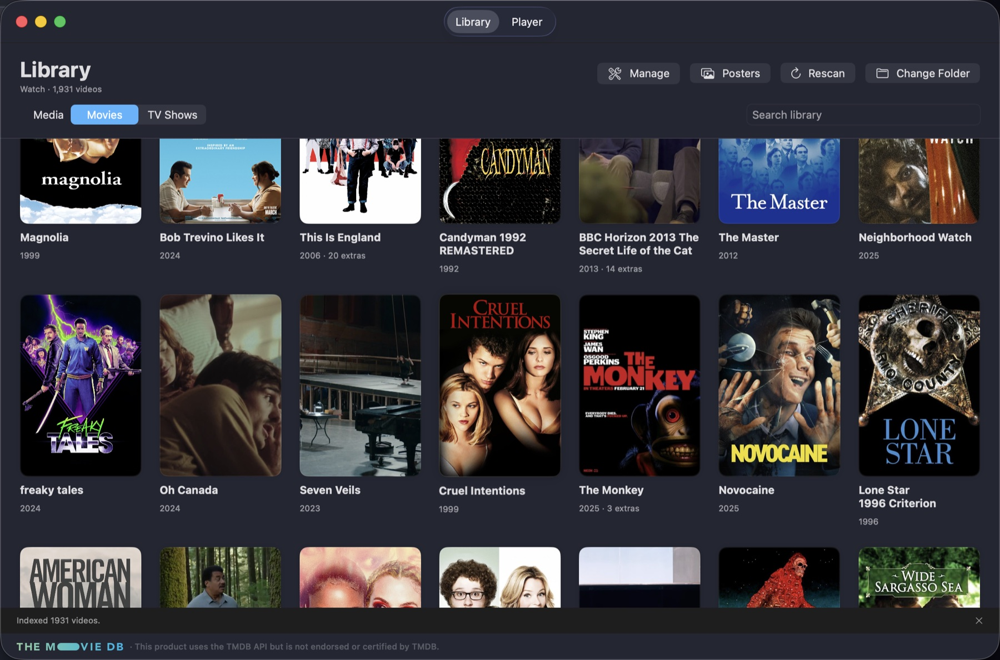
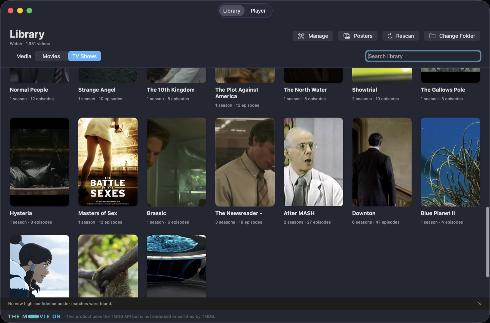
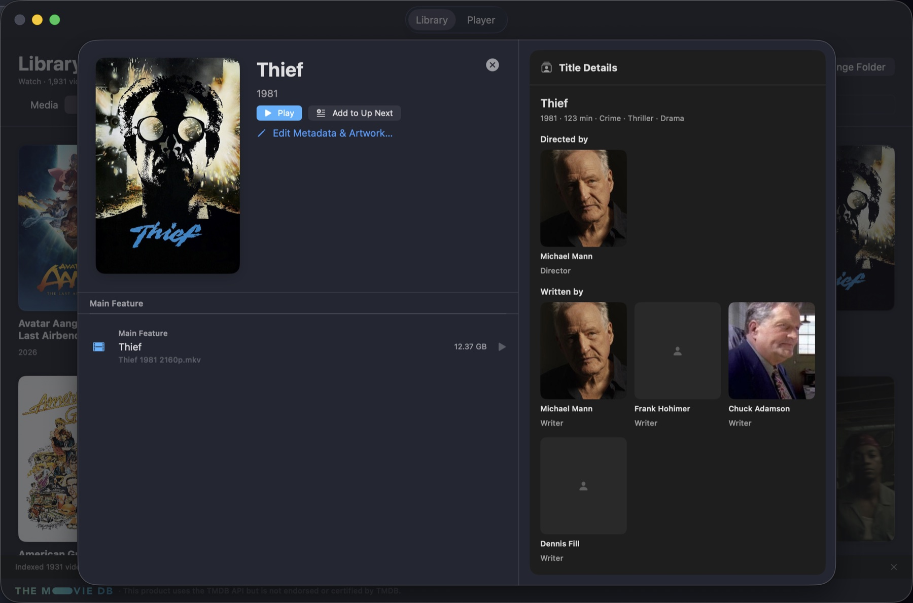

Native AirPlay
Choose your Apple TV with the system route picker and stream over your local network.
Browse movies and shows, inspect the cast and crew, organize what plays next, and stream almost any local video to Apple TV—with selectable subtitles intact.
Free to download and use. · macOS 14 Sonoma or later · Apple silicon · Signed and notarized

Choose the folder you already use. MovieThrow indexes it locally, separates movies from TV, groups seasons and episodes, and notices when files change.


Every title opens in a proper detail view with large artwork, runtime, genres, directors, writers, producers, cast, characters, and headshots. Play immediately or add it to Up Next.
MovieThrow treats subtitles as part of the title, not an afterthought. When a subtitle track is available, playback starts with it on by default and keeps it selectable on Apple TV.
MovieThrow inspects codecs instead of trusting extensions, then chooses the lightest reliable path to your Apple TV.
Choose your Apple TV with the system route picker and stream over your local network.
Direct play, lossless repackaging, or Apple-silicon hardware transcoding—only when necessary.
Embedded and sidecar captions stay selectable. Even Blu-ray PGS and DVD subtitles can be converted with OCR.
Build and reorder a queue that survives relaunches, with natural movie and episode transitions.
Seek, resume, sleep, and wake while keeping video, audio, and captions on one source clock.
Your media stays on your Mac and LAN. Metadata overrides and artwork can remain completely local.
Point MovieThrow at your existing movies and TV folder. Nothing needs to be moved or uploaded.
Review its artwork and credits, then press Play or add movies and episodes to Up Next.
Select your room with AirPlay. MovieThrow prepares the stream and keeps captions available on the TV.
Free for macOS. Developer ID signed, Apple notarized, and ready for Apple silicon.
↓ Download the DMG